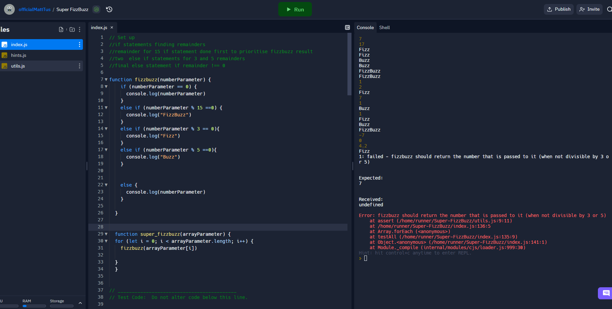

Blocked!!
I hope the ole phrase "Knowledge Is Power" isn't true. If it were, i'd be kinda buggered after this week. A few tasks from the Javascript Katas had me absolutely
floored, and not in the good way. I especially struggled with the Built-In Method Kata. Lets first begin with the following image

This task had me questioning my keyboards structural integrity #saveTheKeyboards. I was convinced several times that I had figured out the way to do this, the for
loop above being such an example. After spending way more time than I'll admit on this one method, scouring the web for answers, I decided to seek some help from a
facilitator who pointed out that I was greatly overthinking the problem. Completing the problem after this was bittersweet. An easy one-line coded solution that
took about 30 minutes per character to complete. It was time for a break. This was an especially frustrating experience as I think my difficulty with the question came down
to my understanding of the question. My thought process was incorrect and looking back at it now, probably would have benefited from essentially forgetting the question and
coming back later and trying to reprocess the information in a different mindset. This question teaches me that going forward, it can be really positive to take a step back
if you get stuck, unlearn everything about the question, and go hard again after your break, really breaking down everything.
Elegance Everywhere
Contradictory to my problem above, I found the rest of the Built In Methods at least solvable. The deBee function was difficult to begin with, but I really utilized
the power of pseudocode. Breaking down the tasks helped quantify, isolate and establish the goals and what we had to achieve. There were several pieces to this task and
using pseudocode, I was able to (eventually) solve the problem. Solving these last tasks in the kata was really rewarding as it was the last kata to complete for the sprint.
It definitely came across as a meaningful triumph as I was able to look back over the week, recognize its been tough, and realize that's its done. On to the next challenges.
LETS GO!!
How confident am I in the following areas??
Pseudocode:
is an ultimately powerful tool. It involves reading the task and then breaking it down into a step by step guide to completing it.
The steps generally each require a certain method or line of code to be written and run successfully, to complete, however it is only ever written in hand form. No code is
written in the pseudocode phase of a development project.
Trying Something:
is exactly what it sounds like. I spent some time this sprint copying over code from repl to VS code to try different potential
solutions, working line by line trying to gain the desired result of each of these lines of code.
Rubber Ducky Method:
The Rubber Ducky Method is a debugging tool popular amongst the craziest of programmers. When encountered with bugs in their code, a programmer will follow these simple steps.
Step 1: GET A DUCK
Obtain a rubber duck, preferably by legal means, but sometimes “ya gotta do what ya gotta do”.
Step 2: TALK TO DUCK
Line by line, speak to the duck about your code and what each function is doing and how it contributes to the success of the program.
Step 3: THANK DUCK
Through your detailed explanations, or perhaps the duck's infinite wisdom, you will discover the issues in your code. Make sure to thank the duck for its efforts.
Step 4: PAMPER THE DUCK
Keep the duck in a nice cool spot, not too much sunlight. Give him a dust off every now and then. Keep him close as the duck knows you will need him again.
Note: If one duck doesn’t help, get another, I’m sure there’s free space at your desk.
Reading Error Messages
Reading error messages correctly can greatly reduce the time you are stuck on a specific problem. Error messages
tell you exactly where there is an issue that is crashing your program. This sprint I was reading the error message for one task incorrectly. Take a look at the below
image:

Here I misread the code so I was really unsure of what was crashing my code. All the numbers being
run through the program lead me to believe that my program was working fine, but upon further investigation and some external assistance, I realized that the error code is
crashing the program after at the first task, which resulted in a super easy and immediate fix to my code.
Console Logging:
I do love a good console log. One of the easiest methods to testing whether your code is producing the results you want. Whenever
you have doubts with your code, just console log it and this will tell you straight away if it is working correctly. Hopefully there is no dreaded red text.
Googling
The important thing to consider in programming is that when googling for assistance with code, you are using a website or video that is also
using the correct code. I once watched a javascript video for about 10 minutes trying to get help with a python program.
Asking for help
Asking for help is all about asking the right question in a respectable manner that promotes a genuine need for assistance. No matter
who you ask, being polite and respectful will essentially always result in a conversation about the issue or adversely, a conversation about how both of you don't know which is
always fun